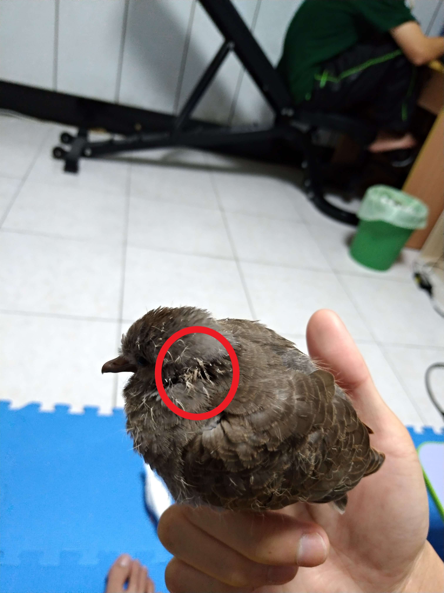
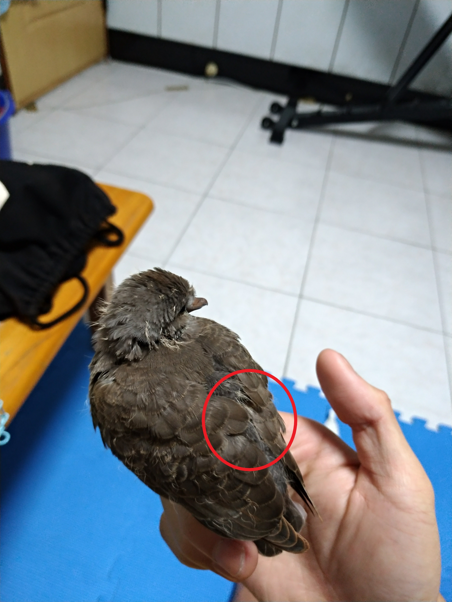
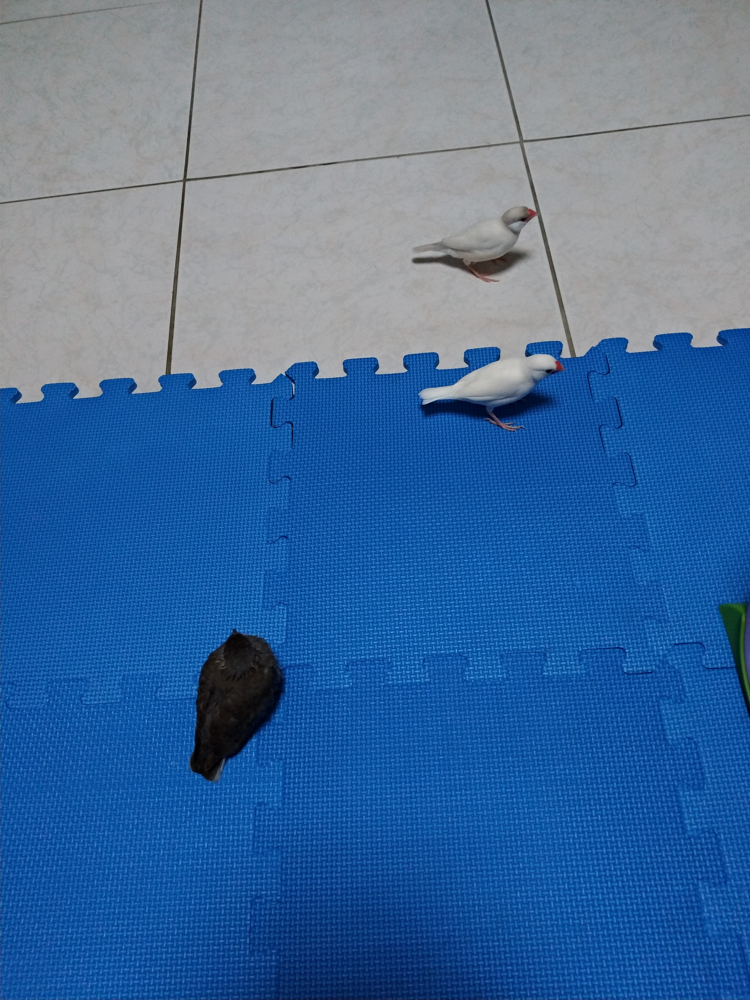
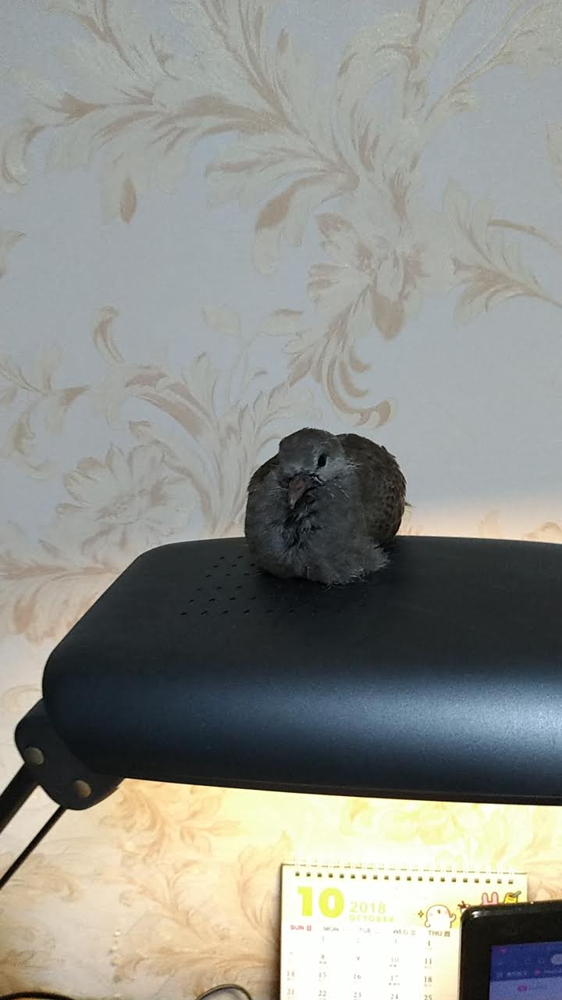
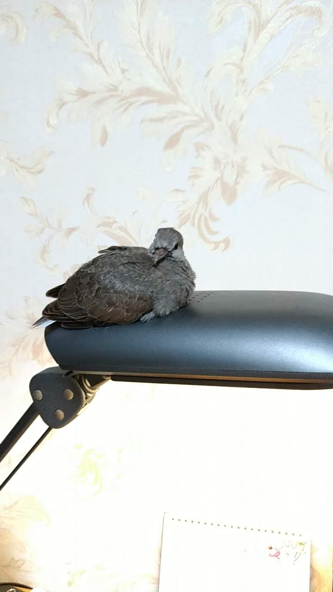

10/30的下午，班上的女同學拿了一個紙箱給我的室友，打開一看是一隻走失的斑鳩幼鳥，雖然看似長得差不多了，但時不時就發出幼鳥專屬的撒嬌叫聲，似乎說著:我還只是個小朋友，請照顧我的感覺。
 
上圖紅色圈圈裡白色毛就是幼鳥專屬的幼毛，我們就是從這裡判斷他是不是成鳥，第一天的晚上還在適應環境，對我們的一舉一動都存有警戒心，給他的飼料也不吃，只好放回紙箱讓他休息，等他真的餓了再看看是否能夠自行覓食。
隔天，可能是真的餓很久了，瓶蓋當成臨時的飼料盒，一放下去就湊過來，不停的啄裡面的飼料，看到牠這樣的舉動我和我朋友就比較放心，畢竟已經會自己啄食物來吃，代表已經接近成鳥了，等牠的幼毛掉落的差不多就可以放生了。

但畢竟是野鳥，對人類不會有太多的信任，就連和我養的文鳥處在一起還是有警戒心，任何的風吹草動都會瞪大眼睛觀察，深怕有任何的危險。
 
那幾天台東風大雨大的，又很冷，我把斑鳩跟我的文鳥放在我的房間裡，避免他們感冒。放他們出來活動的時候，文鳥都會在我附近跳來跳去，但斑鳩生性懶惰，只有覓食或危機才會飛走，所以他找了一個非城舒適的地方:檯燈上，既溫暖又平坦，一臉舒適的坐在上面打盹。
過幾天天氣回暖後，我朋友就把他帶回學校，找棵樹就把牠放上去了，臨走前還叮嚀他要小心伯勞鳥，因為伯勞鳥會攻擊比她小隻的鳥類，放生後就祝福牠能夠在大自然裡好好生存下去囉。